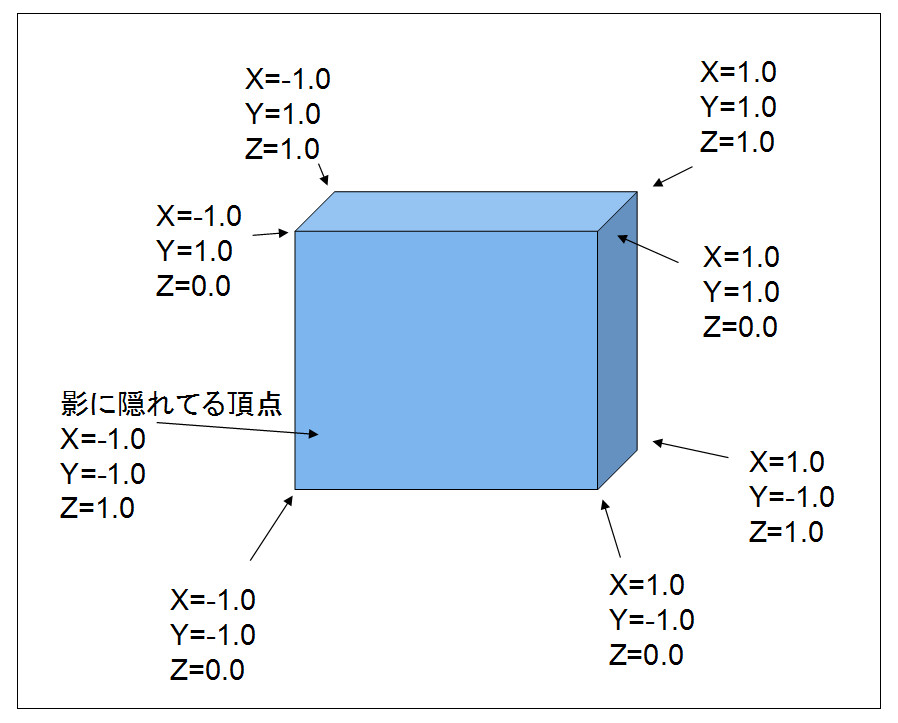
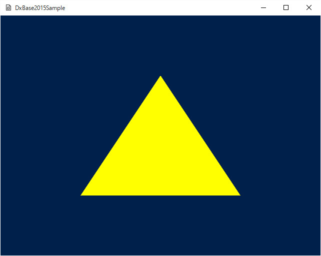

４０１．三角形の単純描画
４章は、
DxBase2015が持つ、
DirectX11に直接アクセスするインターフェイスの説明です。
３章までの説明とは違い、この章では
DirectX11の用語がいたるところに出てきます。ですから、読み進めるためには、
DirectX11の知識が多少必要になります。出てくる都度説明するように心がけますが、深い部分は各自、
DirectX11のマニュアル、を調べながらの実装になるかと思います。
DirectX11のマニュアルはMSDNのサイトで調べられます。検索エンジン等で、たとえば
MSDN ID3D11DeviceContext2などと検索すると、英語ですが、インターフェイスの説明のサイトにたどり着きます。
しばらくはそういったマニュアルと格闘する形になるでしょう。
また、ブログなどでサンプルを公開しているプログラマ諸氏もいます。思うようにいかない場合は、そういったサイトの活用も必要でしょう。
いずれにせよ、そんなに簡単なことではありません。しかし、ある程度自分の思い通りに組めるようになると、
DirectX11が、いかに
夢への切符であるかを実感するでしょう。
それでは、まず、
デバイス座標直接書き込むサンプルから紹介しましょう。
デバイス座標
DirectX11を直接操作するためには、
DirectX11の座標系について知らなければなりません。
ここでいう座標系とは、
デバイスの座標系です。よく右手座標とか左手座標とかは耳にしたことがあると思います。
DirectX11は
通常左手座標を使用しています
DxBase2015も
左手座標系です。右手と左手の違いは、
Z方向が奥に向かうか、手前に向かうかの違いです。
左手座標系は
奥に向かうほど大きくなります。
ということで
DirectX11のデバイス座標系は以下のようになります。

図4001a
X方向が、左から右に向かって、
-1.0から1.0の範囲になります。
Y方向が、下から上に向かって、
-1.0から1.0の範囲になります。
Z方向が、手前から奥に向かって、
0.0から1.0の範囲になります。
こうしてみると、
Z方向だけが、範囲が狭いことがわかります。
DirectX11では、
この範囲に何かの色を書き込みます。ディスプレイデバイスは結局のところ
ドットの集合体です。ですから、その目的のドットに色を書き込むことで、何らかの表現を行います。
これまで、ワールド変換とか、頂点とか、カメラとか、いろんな要素が出てきました。しかし、それらは最終的に
デバイス座標に書き込む色を決定する手段にすぎません。
つまり、あらゆる３Ｄ的計算が、デバイスに書き込む色の計算、だったのです（なーんだ）
逆に言えば、
DirectX11を直接操作するということは、その
書き込む色を手動で計算し、決定するということです。
デバイス座標に直接描画する
Sample401は、デバイス座標が単純にドットの集合である、ということを説明するものです。
Sample401ディレクトリのソリューションを開き、リビルド、実行すると以下のような画面が現れます。

図4001b
黄色い三角形が描画されるだけです。このサンプルは、ほとんど３Ｄ的な計算をせずに、デバイス座標に色を描画しています。
まず、
Charactor.h、cppに記述されている、
TriangleObjectクラスを見ていきましょう。
以下は、ヘッダファイルにある宣言部です。
class TriangleObject : public GameObject{
//バッファ関連
ComPtr<ID3D11Buffer> m_VertexBuffer; //頂点バッファ
UINT m_NumVertices; //頂点の数
public:
//構築と破棄
TriangleObject(const shared_ptr<Stage>& StagePtr);
virtual ~TriangleObject();
//初期化
virtual void Create() override;
//描画
virtual void Draw()override;
};
ここでは、コンストラクタデストラクタのほかに、仮想関数として、
Create()とDraw()が多重定義されています。
これまでのサンプルでは
Draw()を記述することはありませんでした。
目的のDrawコンポーネントを指定し、実際の描画はそのコンポーネントに任せていました。
しかし、この章（４章）での主役は
Draw()です。この仮想関数を多重定義することで、自由自在の描画を実装することができます。
また、ヘッダには
m_VertexBufferという
頂点バッファの変数が宣言されています。
この型名である
ComPtr<ID3D11Buffer>というのは、
comコンポーネントインターフェイスのポインタを内包するテンプレートクラスです。shared_ptrのように使用することができます。
ID3D11Buffer* m_pVertexBuffer;
のように生ポインタとして持ち、自分で管理することも可能ですが、
ComPtrを使用した方が、オブジェクトの解放を自動的に行ってくれるので便利です。ちなみに、
ComPtrは
WindowSDKの一部です。
ここで盛んに出てくる、
COMとインターフェイスについて簡単に説明します。
COMというのは
コンポーネントオブジェクトモデルの略で、簡単に言えば
多言語からアクセスできるdll（ダイナミックリンクライブラリ）と考えることができます。多言語というのはプログラミング言語のことです。COMはC++からのみならずC#やVisualBasecからも利用することができます。
DirectXやXMLの項で説明したMSXMLなど、
DxBase2015で使用されるCOMはいくつもあります。それぞれ
インターフェイスというオブジェクトのポインタを取得し、それを介してメンバ関数などにアクセスします。
ID3D11Bufferのように
Iで始まる型名をもってるのが
インターフェイスです。また
インターフェイスは前述したように
ComPtrを介して保持することもできます、
DirectX11が持つインターフェイスは多岐にわたります。一番基本になるインターフェイスは
ID3D11Deviceです。
DxBase2015はそのバージョンアップ版である
ID3D11Device2を使用しています。
DirectX11の場合、まず
ID3D11Deviceを取得した後、それを介して、
ID3D11DeviceContextやIDXGISwapChainを取得します。それぞれに役割があるのですが、
ID3D11DeviceContext（実際に実装されているのはID3D11DeviceContext2）が、とりあえず重要です。重要ですが、これらは起動時にフレームワークが取得してありますので、必要になったときにポインタを得れば良いようになってます。
さて、デバイス座標に実際に何かを書き込む場合、ここでも
インターフェイスが必要になります。
まず必要なのが
頂点バッファと呼ばれる
頂点データそのものです。
実体はメモリ領域なのでしょうが、C++のnewで作成するのではなく、DirectX11のAPIを使って作成します。
TriangleObjectクラスでは、
ComPtr<ID3D11Buffer> m_VertexBuffer; //頂点バッファ
という形で保持しておきます。
そしてその領域を確保して、データをセットするのが、Create()関数での以下の処理になります。
void TriangleObject::Create(){
//頂点を作成するための配列
vector<VertexPosition> vertices = {
{ VertexPosition(Vector3(0.0f, 0.5f, 0.5f)) },
{ VertexPosition(Vector3(0.5f, -0.5f, 0.5f)) },
{ VertexPosition(Vector3(-0.5f, -0.5f, 0.5f)) },
};
VertexUtil::CreateVertexBuffer(m_VertexBuffer, vertices);
//頂点数の設定
m_NumVertices = static_cast<UINT>(vertices.size());
}
VertexUtil::CreateVertexBuffer()関数はテンプレート関数になっています。この呼び出しを追いかけていくと最終的に、
pDx11Device->CreateBuffer()という呼び出しに行き着きます。これは、
ID3D11Deviceインターフェイスのメンバ関数（API）で、頂点バッファを作成して、そのポインタ（ID3D11Bufferのポインタ）をm_VertexBufferに代入します。興味ある人は追いかけてみてください。
また、
Create()関数では、m_NumVerticesに頂点数（つまり３）を代入しています。
ここで作成している
頂点は、上記のように
VertexPosition型です。つまり、
位置情報しか持ってない頂点となります。値は、
デバイスに直接描画するので
デバイス座標系の値をsetします。
三角形の描画
実際の描画は、Draw()関数で行います。
Draw()の説明の前に、
デバイスに描画するにはどうしたらいいかを説明します。
まず、ここまで
デバイスという言葉をあいまいに使ってましたが、実際に描画する先は
バックバッファやステンシルバッファと呼ばれる領域です。フレームワークでは、これらへの描画を積み重ねていって、最終的にフロントバッファ（つまりディスプレイそのもの）に転送します。
具体的には、バックバッファとステンシルバッファをクリアし、各オブジェクトのDraw()関数を呼び出し、最終的に転送するという操作を、ターン（約60分の1秒）に1回、行っています。
ですから、各ゲームがそれぞれに記述しなければならないのは、フレームワークから呼び出されるDraw()関数にこたえることです。これを、仮想関数
Draw()の多重定義の形で実装します。
DirectX11では、
仮想的なキャンバスのようなものとして、
ID3D11DeviceContextというインターフェイスを持っています。プログラマは、このインターフェイスを通してバックバッファやステンシルバッファにアクセスします。
とはいえ、たとえばメモリのコピーのような方法でアクセスできるわけではありません。
シェーダと呼ばれる
描画方法を記述したプログラムによって描画します。
主なシェーダとして
頂点シェーダとピクセルシェーダがあります。このほかに、DxBase2015が対応しているシェーダに
ジオメトリシェーダと計算シェーダがあります。
フレームワーク内では、
BaseLibフィルタ内に基本的な描画に使用できる
頂点シェーダとピクセルシェーダが実装されています。これまでのサンプルでは、用意されているシェーダを使用してきました。
では、このサンプルではどうかといいうと、やはり、あらかじめ用意されているシェーダを使います。しかし、これまでのサンプルのように
Drawコンポーネントは利用しません。直接シェーダを設定して描画します。
Draw()の説明をする前に、この描画で使用する
頂点シェーダとピクセルシェーダについて説明します。
頂点シェーダとは、
一つ一つの頂点に対する計算方法を記したプログラムです。通常、３Ｄオブジェクトでは、頂点バッファに入っているのは、
ローカル座標という座標系で記述されたオブジェｋトです。ローカル座標とは、通常原点を中心とした点の集合です。球体なら、原点を中心に、半径分外側にいくつもの点が実装されています。
それを、
ワールド変換という計算によって、ステージ上の位置に、拡大縮小、回転、移動、をかけます。
続いて、
ビュー変換という計算によって、カメラから見た位置に変換します。ここで、カメラ位置と注視点、そしてカメラの傾きが重要になります。
最後に、
射影変換によって、遠近法や正射影法を適用させ、上記
デバイス座標の点に計算するのです。また、場合によっては
頂点の法線を利用してライティング処理を行います。
この計算を行うのが
頂点シェーダの役割です。DirectX11では、この計算プログラムを
頂点シェーダ記述します。
頂点シェーダによって各頂点がデバイス座標上のどの位置に描画されるかが決定します。そして、今度はそれらの点を結んで、デバイス座標上のピクセルに変換します。つまり、各頂点同士は離れていますので、これを補間処理によって間を埋めていくのです。これを
ラスタライザといいます。
ラスタライザはDirectXによって自動的に行われますので、この部分の計算式は記述する必要はありません。ただ、
ハルシェーダ、ドメインシェーダ、ジオメトリシェーダの3つのシェーダを、頂点シェーダとラスタライザの間に記述することも可能です。（DxBase2015はこのうち
ジオメトリシェーダに対応しています）。
ラスタライザが行われると、各オブジェクトがデバイス座標上のピクセルに変換されます。
ピクセルシェーダーでは、この各ピクセルに対する処理を記述します。
ここでは各ピクセルに対する色の調整、陰影処理、テクスチャのマッピング処理、透明処理などなど、いわゆる
装飾を施します。
ピクセルシェーダの出力は、たんなる
色です。ですから、頂点シェーダから始まる様々な計算処理を全く無視して勝手な色を出力することも可能です。
そして、
頂点シェーダからピクセルシェーダまでの工程は、流れ作業のようなものなので、総称して
グラフィックパイプラインと呼ばれます。
それではいよいよDraw()関数です。全ソースを紹介します。
void TriangleObject::Draw(){
auto Dev = App::GetApp()->GetDeviceResources();
auto pD3D11DeviceContext = Dev->GetD3DDeviceContext();
//コンスタントバッファの準備
SimpleDirectConstantBuffer sb;
sb.m_DiffuseColor = Color4(1.0f, 1.0f, 0, 1.0f);
//コンスタントバッファの更新
pD3D11DeviceContext->UpdateSubresource(
CBSimpleDirect::GetPtr()->GetBuffer(), 0, nullptr, &sb, 0, 0);
//ストライドとオフセット
UINT stride = sizeof(VertexPosition);
UINT offset = 0;
pD3D11DeviceContext->IASetVertexBuffers(
0, 1, m_VertexBuffer.GetAddressOf(), &stride, &offset);
//描画方法（3角形）
pD3D11DeviceContext->IASetPrimitiveTopology(D3D11_PRIMITIVE_TOPOLOGY_TRIANGLELIST);
//コンスタントバッファの設定(ピクセルシェーダのみでよい)
ID3D11Buffer* pConstantBuffer = CBSimpleDirect::GetPtr()->GetBuffer();
pD3D11DeviceContext->PSSetConstantBuffers(0, 1, &pConstantBuffer);
//シェーダの設定
pD3D11DeviceContext->VSSetShader(VSSimpleDirect::GetPtr()->GetShader(), nullptr, 0);
pD3D11DeviceContext->PSSetShader(PSSimpleDirect::GetPtr()->GetShader(), nullptr, 0);
//インプットレイアウトの設定
pD3D11DeviceContext->IASetInputLayout(VSSimpleDirect::GetPtr()->GetInputLayout());
//描画
pD3D11DeviceContext->Draw(m_NumVertices, 0);
//後始末
pD3D11DeviceContext->VSSetShader(nullptr, nullptr, 0);
pD3D11DeviceContext->PSSetShader(nullptr, nullptr, 0);
}
たかだか三角形を一つ描画するために、ずいぶんコードを書かなければならないのだな、と思うでしょう。
そうなのです。
DirectX11は多機能なため、それぞれの機能を一つ一つ設定しないと、そのオブジェクトが必要とする描画を実装できないのです、それでも、フレームワーク内蔵のシェーダを使用しているだけ、まだシンプルです。
一つ一つ見ていきましょう。まず、描画するためのインターフェイスである、
ID3D11DeviceContext2インターフェイスを取得します。これは、起動時に作成されていて、以下の2行で取得できます。
auto Dev = App::GetApp()->GetDeviceResources();
auto pD3D11DeviceContext = Dev->GetD3DDeviceContext();
続いて、
コンスタントバッファと呼ばれる、
シェーダに渡すパラメータを設定します。
今回利用するシェーダーは頂点シェーダは
VSSimpleDirectクラス、ピクセルシェーダは
PSSimpleDirectクラスというクラスに入っています。それぞれシングルトンになっていて、スタティック関数を使ってシェーダそのものを取得します。
コンスタントバッファはそれらのシェーダに渡すパラメータを記述します。
まず、
VSSimpleDirectクラスが持つ
頂点シェーダを紹介します。
BaseLib/Shadersフィルタにある
VSSimpleDirect.hlslというファイルが頂点シェーダ本体です。
float4 main( float4 Pos : SV_POSITION ) : SV_POSITION
{
return Pos;
}
これまで細かく説明してきたわりにはシンプルです。この頂点シェーダは、入力（つまり位置情報だけ持つ頂点）をそのまま何の計算もせずに出力（float4型）しています。
通常３Ｄ用のシェーダであれば、ここで、ワールド変換、ビュー変換、射影変換を行いますが、このサンプルは
デバイス座標に直接描画するので計算は必要ないのです。
続いてピクセルシェーダです。
BaseLib/Shadersフィルタにある
VSSimpleDirect.hlslというファイルがピクセルシェーダ本体です。
cbuffer SimpleDirectConstantBuffer : register(b0)
{
float4 diffuseColor;
};
float4 main( float4 Pos : SV_POSITION ) : SV_Target
{
return diffuseColor;
}
こちらも至ってシンプルです。ピクセルシェーダは
main()という関数ですが、頂点シェーダからの入力
float4 Pos : SV_POSITIONという頂点位置情報を全く無視して、
SimpleDirectConstantBufferという構造体内の
diffuseColorをそのまま出力しています。（returnするということは出力する、という意味です）
ピクセルシェーダの出力は、そのままディスプレイ上の
色になると前述しました。つまり、どんな入力があろうがすべて、
diffuseColorを描画するというのがこのピクセルシェーダが行っている処理です。
ここで
SimpleDirectConstantBufferという構造体に注目しましょう。この構造体こそが、C++プログラムから渡される
シェーダで使用するパラメータです。
Draw()関数内の
SimpleDirectConstantBuffer sbにほかなりません。
それではシェーダ側の説明はこれくらいにして、Draw()に戻ります。
Draw()関数内の、以下の記述は、シェーダ（今回はピクセルシェーダのみ）に渡すパラメータを準備しています。
//コンスタントバッファの準備
SimpleDirectConstantBuffer sb;
sb.m_DiffuseColor = Color4(1.0f, 1.0f, 0, 1.0f);
SimpleDirectConstantBufferは構造体で、実体は以下のような形になっています。
struct SimpleDirectConstantBuffer
{
Color4 m_DiffuseColor;
SimpleDirectConstantBuffer() {
memset(this, 0, sizeof(SimpleDirectConstantBuffer));
};
};
ここではコンストラクタのみ用意され、０初期化しています。この構造体が、ピクセルシェーダ内の
SimpleDirectConstantBufferに対応します。
Draw()では、
m_DiffuseColorメンバに
Color4(1.0f, 1.0f, 0, 1.0f)を渡しています。すなわち
黄色ですね。
そのあと
//コンスタントバッファの更新
pD3D11DeviceContext->UpdateSubresource(
CBSimpleDirect::GetPtr()->GetBuffer(), 0, nullptr, &sb, 0, 0);
の記述で、CBSimpleDirectクラスのバッファ（こちらもインターフェイスになっています）、構造体sbからコンスタントバッファにデータを移行させます。
続いて
//ストライドとオフセット
UINT stride = sizeof(VertexPosition);
UINT offset = 0;
pD3D11DeviceContext->IASetVertexBuffers(
0, 1, m_VertexBuffer.GetAddressOf(), &stride, &offset);
//描画方法（3角形）
pD3D11DeviceContext->IASetPrimitiveTopology(D3D11_PRIMITIVE_TOPOLOGY_TRIANGLELIST);
で、頂点バッファを渡し、描画方法を設定します。
strideとoffsetは頂点バッファの構造です。
strideは各頂点のサイズ（つまり位置情報のみの頂点だということ）、
offsetはどの位置から描画するかを設定します。
続いてシェーダの設定です。
//コンスタントバッファの設定(ピクセルシェーダのみでよい)
ID3D11Buffer* pConstantBuffer = CBSimpleDirect::GetPtr()->GetBuffer();
pD3D11DeviceContext->PSSetConstantBuffers(0, 1, &pConstantBuffer);
//シェーダの設定
pD3D11DeviceContext->VSSetShader(VSSimpleDirect::GetPtr()->GetShader(), nullptr, 0);
pD3D11DeviceContext->PSSetShader(PSSimpleDirect::GetPtr()->GetShader(), nullptr, 0);
//インプットレイアウトの設定
pD3D11DeviceContext->IASetInputLayout(VSSimpleDirect::GetPtr()->GetInputLayout());
ここではコンスタントバッファをピクセルシェーダに渡し、頂点シェーダ及びピクセルシェーダを設定します。最後に
インプットレイアウトというのを設定します。これは頂点シェーダの引数のレイアウトイメージです。頂点シェーダクラス（VSSimpleDirect）が作成されたときに設定されますので、それを渡します。
そしていよいよ描画です。
//描画
pD3D11DeviceContext->Draw(m_NumVertices, 0);
ここでは、頂点の数（３）を渡しています。
最後にほかのオブジェクトの描画の邪魔にならないように、後始末をします。
//後始末
pD3D11DeviceContext->VSSetShader(nullptr, nullptr, 0);
pD3D11DeviceContext->PSSetShader(nullptr, nullptr, 0);
後始末の仕方もどこまで消したらいいか、いろいろあると思いますが、ここでは、シェーダの設定のみ初期化しています。
こうして一つ一つ見ていきますと、決して無駄な設定は行っていないのがわかります。つまり描画処理というのは
グラフィックパイプラインの準備と実行と考えられます。
オブジェクトによってさまざまな描画方法が求められます。３Ｄオブジェクトであれば、遠近法などの処理も必要ですし、影を映りこませるには、ステンシルバッファの設定も必要です。スプライトやエフェクトであればＺバッファを有効にするのか、無効にするのかなどの設定も必要です。
DxBase2015では、ゲームによって変わるさまざまな表現を実装するために、このように、DirectX11への直接のアプローチをできるようになってます。
その結果として、
DirectX11以外の３Ｄエンジン（OpenGLやDirectXの過去のバージョン）へのアプローチを実装するのは至難の業であり、互換性を求めれば、どこかで、DirectX11の機能を制限せざるを得ない局面が出てきます。
DxBase2015のreadme.txtにも述べました、互換性を捨てても
DirectX11にネイティブにアクセスできる環境を維持したのは、このような理由からです。